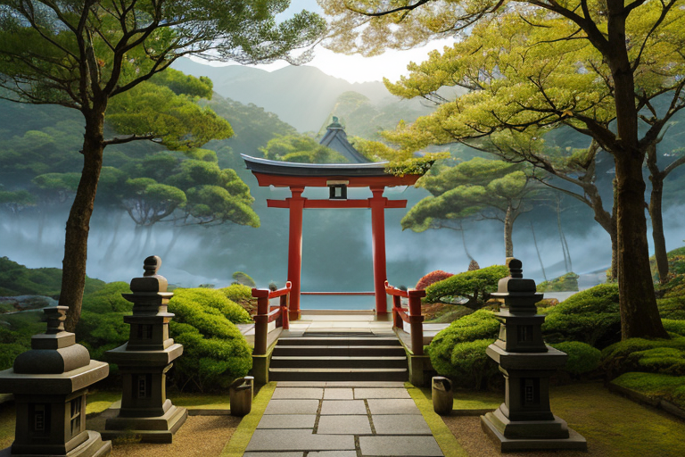
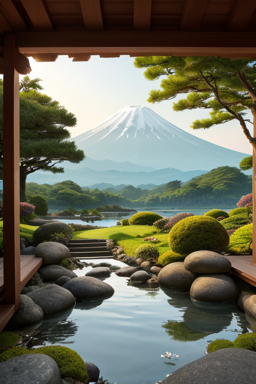
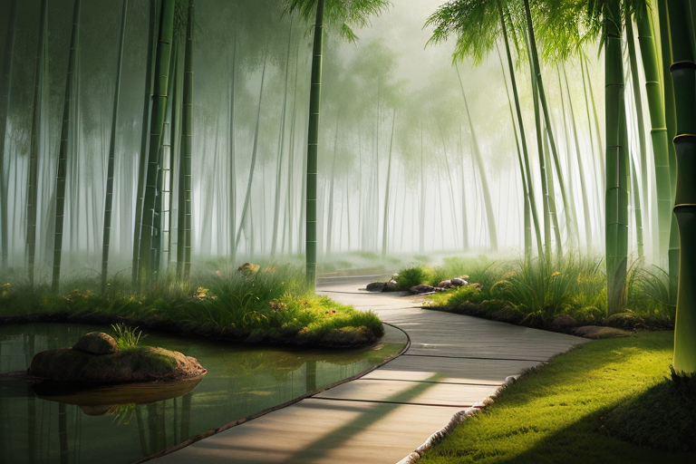
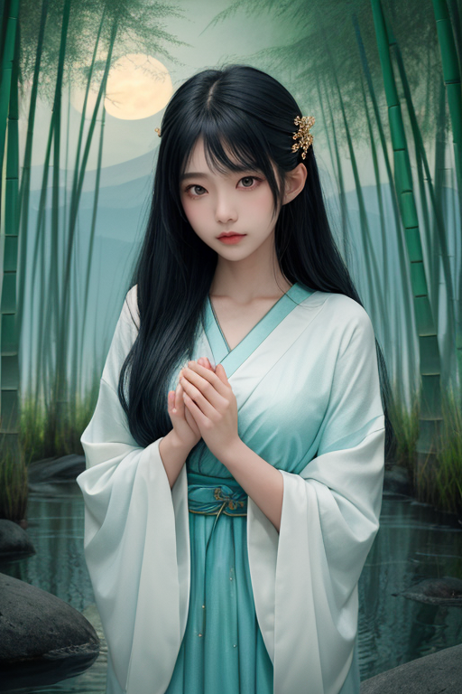
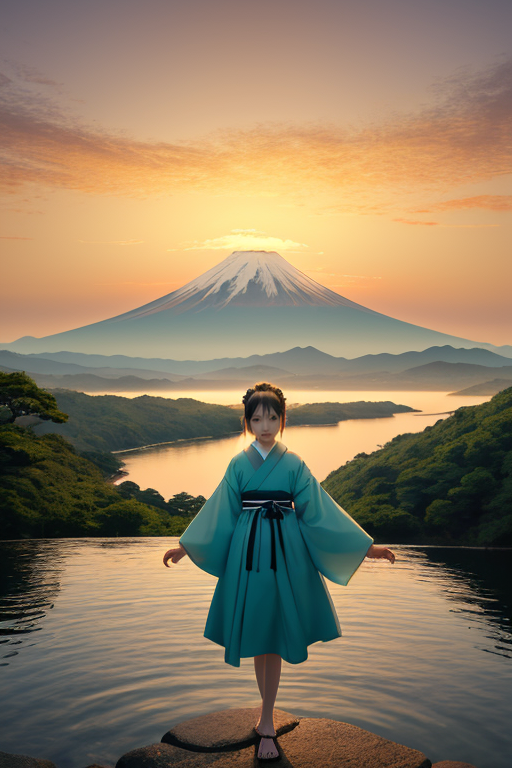

第一章 現実の静岡
あなたはまだ気づいていない。この土地にも、王がいることを。
久能山東照宮の石段を、静かな足取りで一人の男が昇っていた。午後の陽が石畳を温め、杉木立の間からは駿河湾の青がちらりと見える。ここは、徳川家康が隠居の地として選んだ駿府を見下ろす丘だ。男の名はスルガリア・エクイノクス。この国の均衡を司る王である。彼の目には、この土地に張り巡らされた「歪み」の糸が見えていた。それは、巨大なプレートの境目という現実が生み出す、避けがたい緊張の網目だ。
拝殿の前で立ち止まり、彼は目を閉じた。手に持ったのは、浜名湖で採れた桜エビを干したもの。微かな潮の香りが、彼の感覚を研ぎ澄ます。妖精エクイナが彼の肩に現れ、同じく目を閉じる。ここでは、何も起こらない。祈りも、願いも、ただ静寂があるだけ。彼の仕事は、歪みが爆発的に解消されるその一瞬の前に、ほんの少し、その力を分散させること。地震を無くすことはできない。ただ、その衝撃を、隣り合う土地へと少しだけ逃がし、一点に集中する破壊を和らげる。それが、この静かな時間に、彼がこの場所で行っていることの全てだった。
均衡は止まることか？ 彼にその問いはない。均衡とは、絶え間ない微調整そのものだからだ。

第二章 歪みの兆候
久能山東照宮の石段を、静かな足取りで降りる均整王の背後で、富士は朝日に染まっていた。彼の内面には、妖精エクイナからの報告が静かに響く。〈山海のエネルギーバランスに、僅かな偏りが生じています。東側、富士宮周辺の地脈に、祈りの熱量が集中しすぎている〉
それは、春の山開きと新茶の季節を前にした、人々の切実な願いのせいだった。豊作と安全を願う祈りは、目に見えぬ熱として地中に蓄積され、歪みを増幅させる一因となる。王は目を閉じ、その過剰な「祈りの熱」を、浜名湖の穏やかな水面や、三保の松原に続く遠州灘の風へと、そっと分散させる術を探った。うなぎが泳ぐ水路、みかん畑が広がる丘陵――静岡という土地そのものが持つ多様な「受け皿」へと、エネルギーを流し替える。
しかし、分散は完全ではなかった。一点に凝集しようとする力を、完全に均すことはできない。均衡とは、決して完成された静止状態ではない。絶え間ない流れそのものだ。彼は石段の最後の一歩を踏みしめ、微かに眉をひそめた。止まることのないこの作業の果てに、何があるというのか。

第三章 王の葛藤
修善寺の竹林の小径。風の音さえ吸い込むような深い静寂が、王を包む。ここには、彼が調整する物理的な歪みよりも、もっと重いものがあった。感情という名の歪みだ。
彼は本来、感情を持たない存在として降り立った。静岡の地に流れる山海のエネルギーを均衡させ、富士の巨大な重みを支えることが使命である。エクイナやスルガミアと共に、目に見えない綱を張り、緩め、絶えず微調整を繰り返してきた。それは確かに「均衡」だった。しかし、それは止まることのない動きであり、完成のない過程であった。
ふと、駿府城で隠居した家康のことを思う。天下を取った者が、なぜこの地で静かな時を選んだのか。王は、その選択に「完成」を見出そうとする自分がいた。均衡が達成され、役目が終わる瞬間を。だが、みかんの実が熟れ、落ち、また新たな花を咲かせるように、この土地の営みは循環であって終わりではない。
「均衡は…止まることではないのか」
彼は自らに問う。竹林の闇が、答えのない問いを優しく抱きしめる。

第四章 妖精との対話
修善寺の竹林を抜け、桂川のせせらぎが聞こえる辺りで、王は立ち止まった。主席妖精エクイナが、川面に映る月のような淡い光を纏って現れた。
「あなたは、『完成』を求めていますね」
エクイナの声は、川の流れそのもののように穏やかだった。
「この地のエネルギーは、富士の静圧と海の動圧。その均衡は、決して静止するものではありません。浜名湖の潮の満ち干のように、呼吸しているのです」
王は黙って聞いた。彼女は続ける。
「家康公がこの地で隠居されたのも、天下という『動』の後に、内省という『静』の時を選ばれた。それは終わりではなく、別の均衡への移行。私たちの祈りも同じです。災いを無くすのではなく、魂の動揺を、ほんの少し静めるための『呼吸』。富士宮の深い静寂は、そうして育まれるのです」
「では、この調整は永遠に続くのか」
「ええ。でも、それは苦しみではありません」エクイナは微笑んだ。
「みかんの木が季節ごとに実を結ぶように、桜エビが海を染めるように。それはこの土地の、穏やかな『生き方』なのですから」

第五章 微調整と余韻
浜名湖の水面は、夕日に染まり、金と青の均衡を描いていた。スルガリアは湖畔に立ち、目を閉じる。視覚ではなく、この土地に満ちる無数の「祈り」の波長を感じ取っていた。家康が駿府で隠居の時を過ごした安寧への願い。東海道を旅する人々の、無事を願う心。富士を仰ぐ者たちの、畏敬の念。それらは目に見えない精神的な「歪み」であり、過剰になれば不安を、欠乏すれば無関心を生む。
彼は手を静かに広げた。指先から放出される微かな波動が、湖面に同心円を描く。それは調整だ。過剰な不安を少し分散させ、薄れた祈りに微かな共鳴を添える。災害そのものを消すことはできない。だが、人々の心が受ける衝撃を、ほんの少しだけ和らげる「間」を作る。富士宮の静寂、修善寺の深み、三保の松原の清浄さ。それらはすべて、この目に見えない調整が積み重なり、育まれた「余韻」だった。
均衡は止まらない。止まることは死を意味する。みかんの木が季節ごとに実を結び、うなぎが湖と海を回遊するように。それは永続的な動きそのものだ。スルガリアは、自らもまたその動きの一部であることを知っていた。彼の内に芽生えた穏やかな感情も、この土地が与えた、もう一つの均衡だった。
夕日が沈み、最初の星が久能山の空に輝いた。彼の仕事は今日も、そして明日も、静かに続く。
あなたの町にも、王がいる。